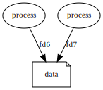
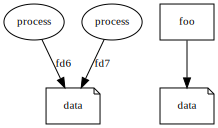
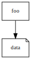

OS Services
Or everything you ever wanted to know about UNIX but were
too afraid to ask
What's UNIX ever done for us?
- Well, there's the process scheduling
- and the file-system
- oh, and the sockets, Dave
- and the privilege separation
- and don't forget the memory isolation
Alright!
But aside from the process scheduling, the file-system, the
sockets, the privilege separation, and the memory isolation …
what has UNIX ever done for us?
Most functions
- Take n parameters
- Perform some work
- Return a value
Weird functions
sys.exit(1)
- Takes 1 parameter
- Doesn't return (as far as your program is concerned)
Weirder functions
os.fork()
- Takes no parameters
- Returns twice?!
Atomic operations
- Exclusive file creation
- File renaming (within FS)
- File linking
The name's expendable?

In fact totally distinct!

Back where we started

Virtual memory
- Every process sees the same address space
- Memory pages can be backed by nothing!
- Memory pages can be backed by RAM
- Memory pages can be backed by files
Part 4
Pipes, FIFOs, Sockets, etc.
No, not those sockets
- UNIX sockets, like files but …
- FIFOs, like files but …
Thank You
Questions? Pub!